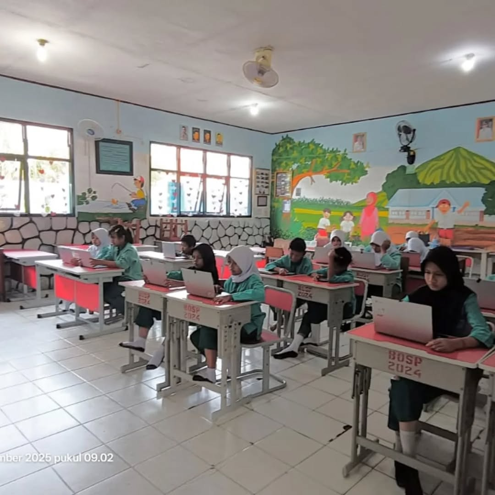
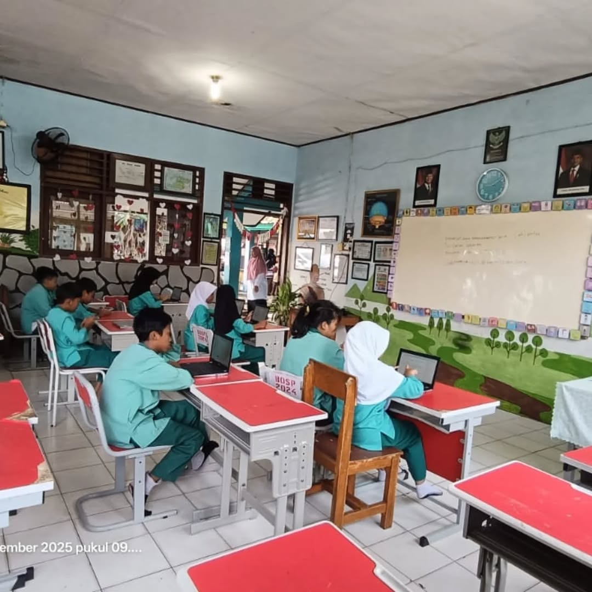
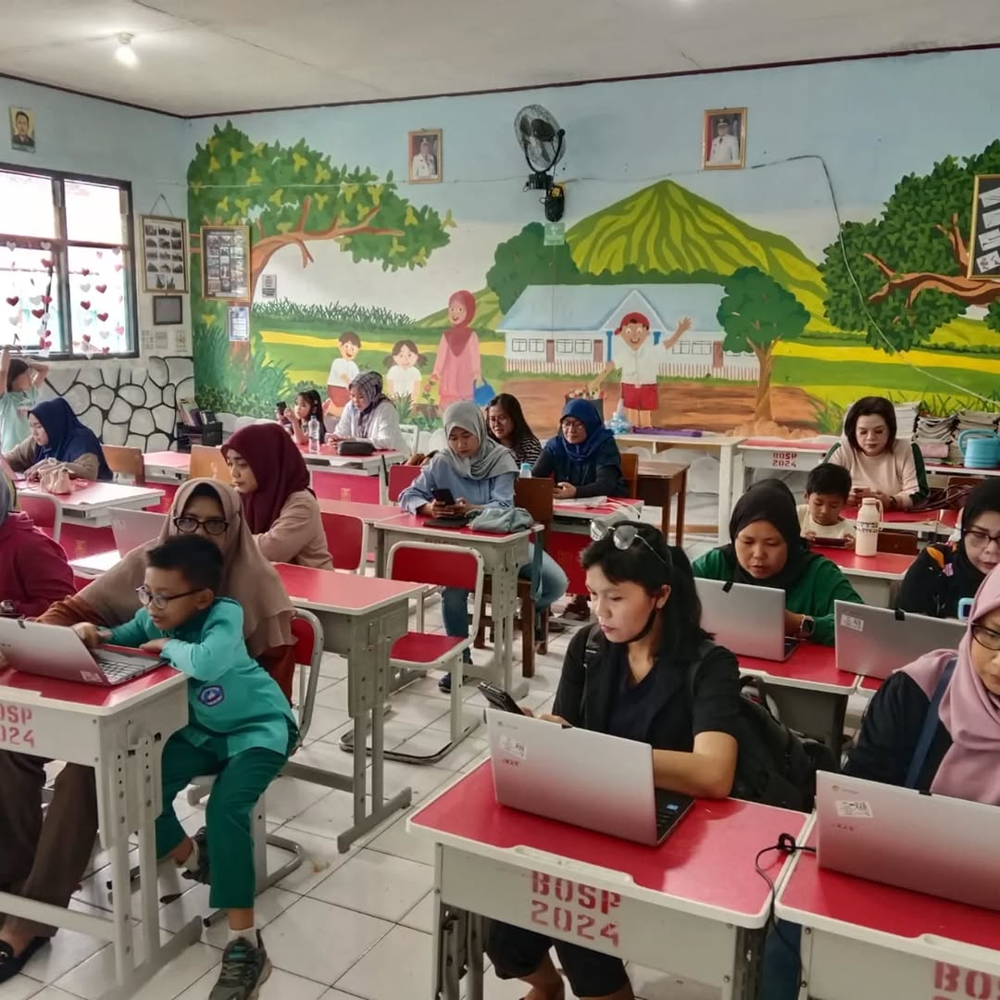
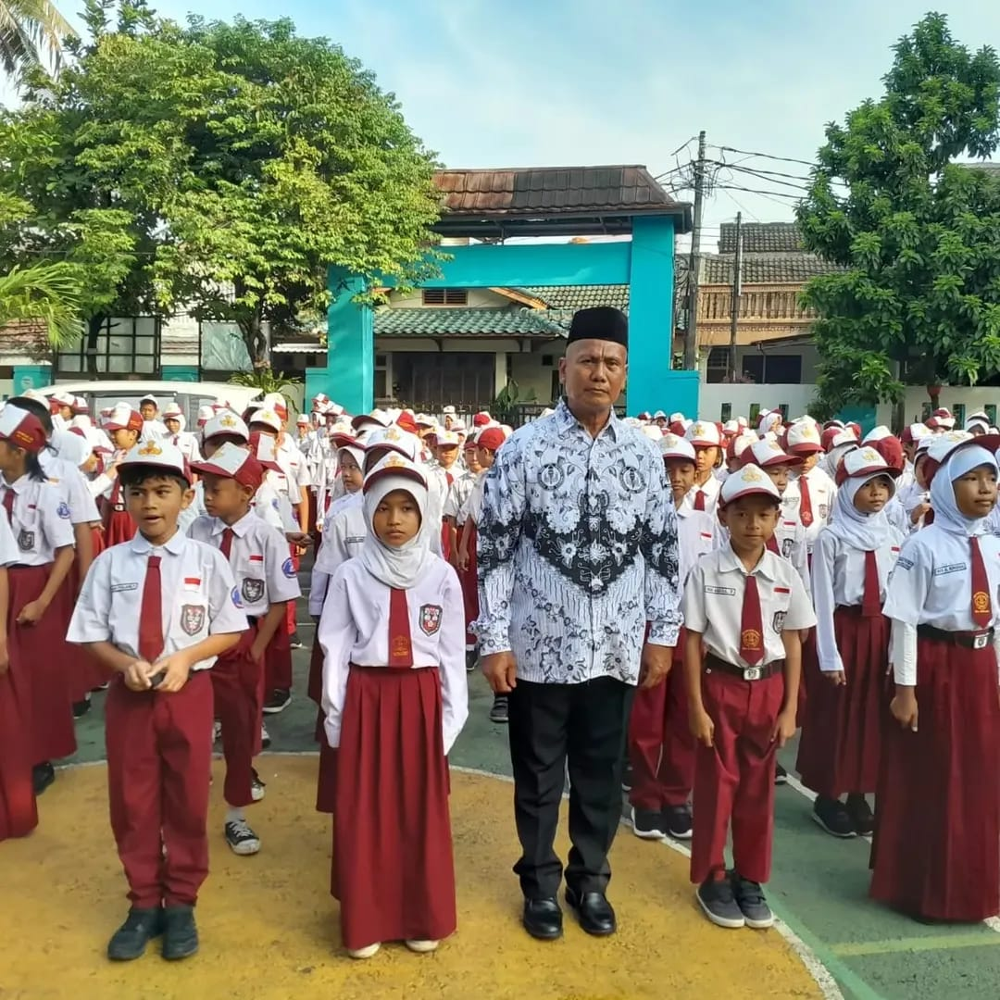
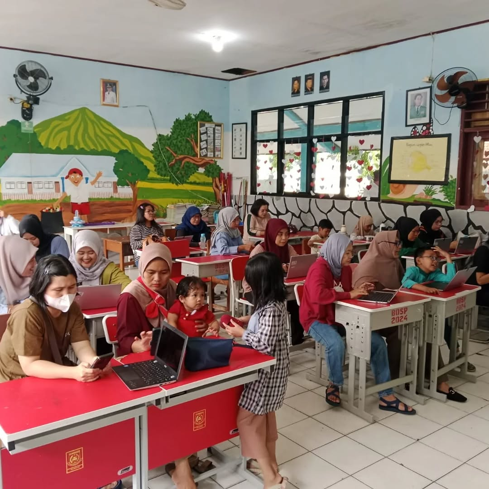
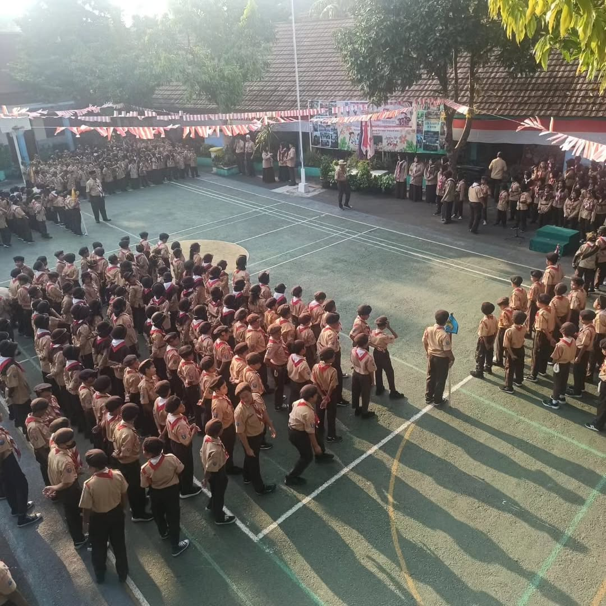
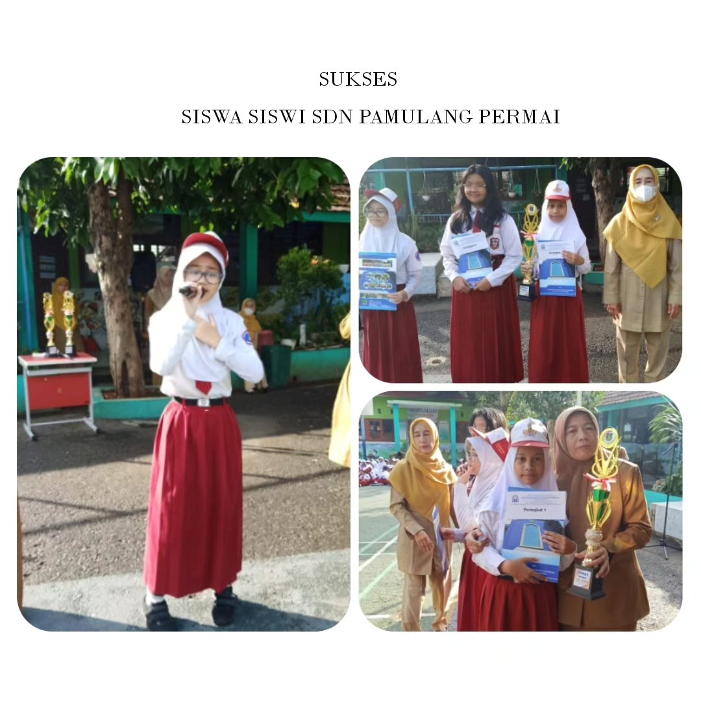
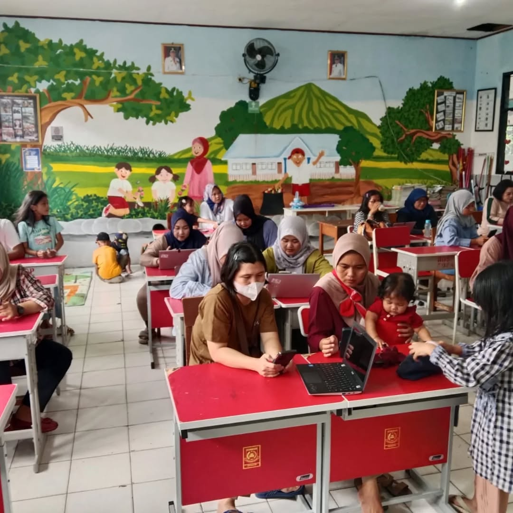
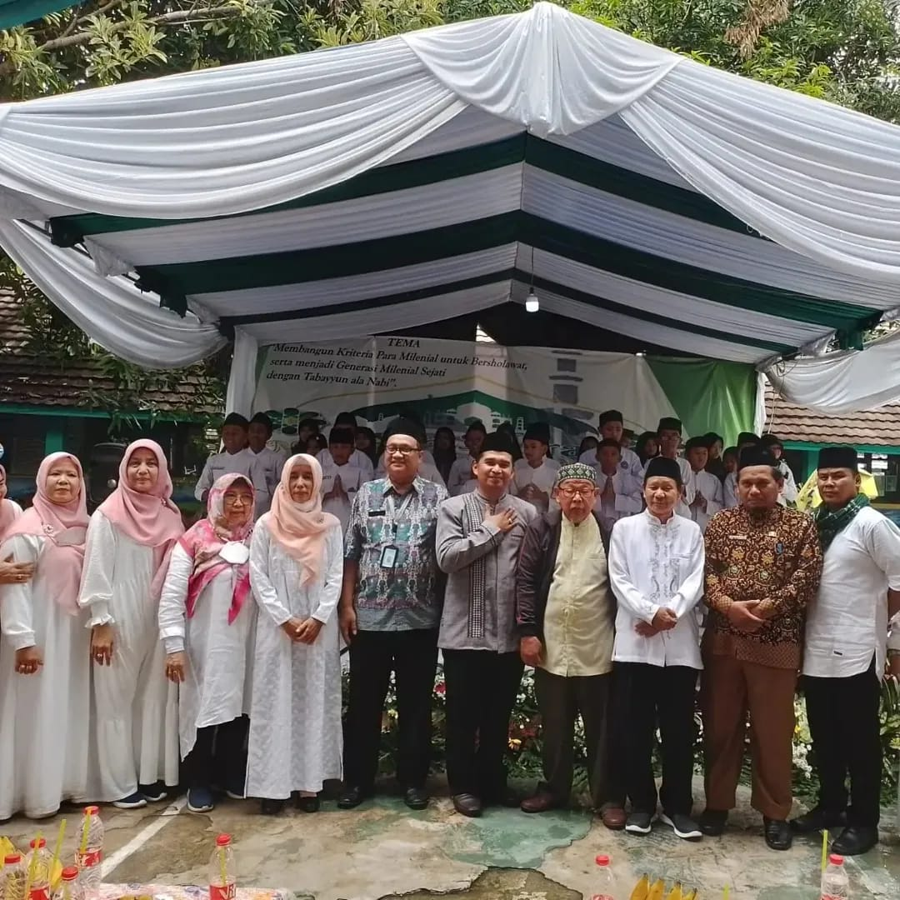

Mencetak Generasi Cerdas, Berkarakter dan Berprestasi
617
Siswa Aktif
29
Tenaga Pendidik
37
Tahun Berdiri
24
Prestasi
UPTD SDN Pamulang Permai didirikan sebagai institusi pendidikan dasar unggulan di kawasan Pamulang, Tangerang Selatan. Dengan pengalaman lebih dari dua dekade, sekolah ini terus berkomitmen memberikan pendidikan berkualitas bagi generasi muda Indonesia.
Mewujudkan peserta didik yang beriman, berkarakter, berprestasi, dan berwawasan lingkungan.
"Selamat datang di UPTD SDN Pamulang Permai. Website ini hadir sebagai sarana informasi dan komunikasi antara sekolah, peserta didik, orang tua, dan masyarakat. Kami berharap website ini dapat memberikan informasi yang akurat mengenai kegiatan, prestasi, dan perkembangan sekolah. Bersama kita wujudkan generasi emas Indonesia."
Drs. Ahmad Sudirman, M.Pd.
Kepala Sekolah UPTD SDN Pamulang Permai
Lihat susunan pengurus dan kepengurusan sekolah.
Kenali tenaga pendidik dan staf sekolah kami.
Program pembelajaran dan kalender akademik.
Capaian dan penghargaan akademik maupun non-akademik.
Informasi pendaftaran peserta didik baru.
Hubungi kami untuk informasi lebih lanjut.








